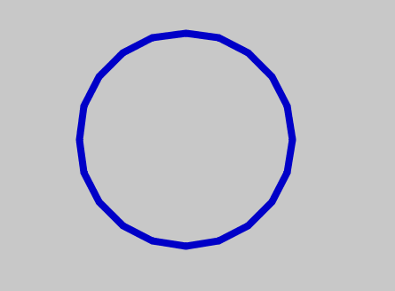
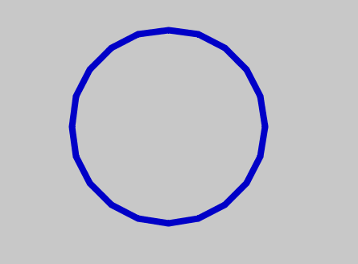
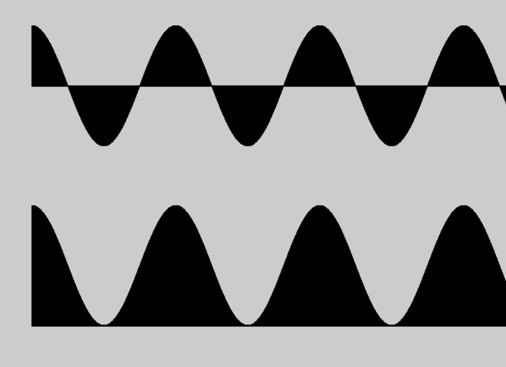
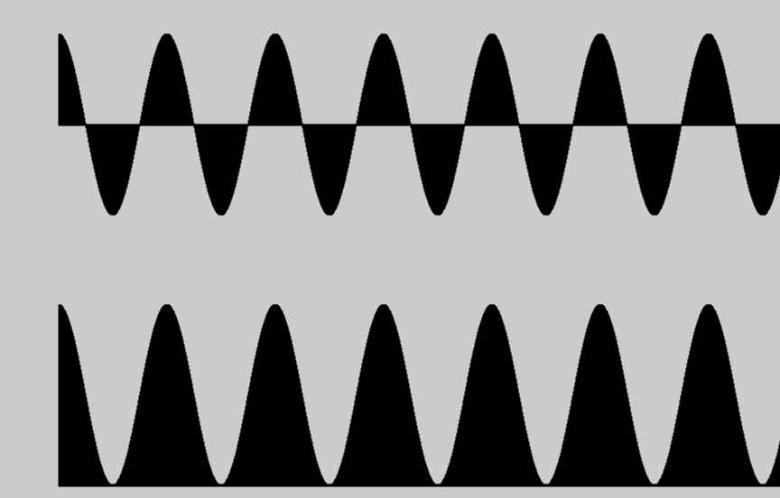
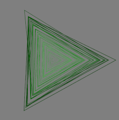

Tutorial: Creating “Circular Noise” using Processing.py¶
In this Tutorial we are going to try and create this animated gif:

Note that it has multiple components. Let’s try to build this, piece by piece. The code can be found here
Acknowledgement¶
This is originally the work of Liam Gardner, who posted the image and code to Reddit. Deconstructing fun projects by others is a very good to develop our programming muscle. Thanks to Liam for the permission to use his code as a starting point. The github repo can be found here (Javascript).
How to Approach this?¶
There is a lot going on. So we have to deconstruct it to understand such images.
1. There are rings. And there are a number of them each with varying size. Since this is the main feature, perhaps we can try starting there.
2. The rings have “noise” (bumpiness). We have to try and build that. One idea is to start with perfect circles and then add the noise.
3. Noise over time. If you stare at the animation, you can see that the rings rotate, as well as “wobble” a bit. We have to recreate that too. That wobbling is dependent on “time” or the framecount of our animation.
In Processing, it is almost always a good idea is to start with a simple image that works. Then we can layer on complexity. In fact, this is how most artists and programmers approach any project. So let’s think of some simplifications.
Simplifications¶
1. Let’s forget the animation for the time being. We’ll start with a static image. If that is satisfactory, we can bring in the animation aspects. I often do this. I will get the static image to my satisfaction, and only then think of dynamic components. In several projects, I have stopped with just the static image.
Reduce the number of rings. In fact, we could start with 1 ring, and then move to 2, and then to many.
Start with circular rings, and then experiment with noise.
Before we go further, let’s get some terminology out of the way. It helps to be able to refer to things.
Nomenclature¶
First, let’s define a few things.
- Ring
Let’s call these circular jagged shapes ‘rings’
- theta
It is the rotational angle. For a circle,
thetagoes from 0 to 360 degrees, or TWO_PI radians. (We will mostly be working with radians). We will be usingcos(theta)andsin(theta)a lot.- Edges
Even though it is a ring, our shape is made up of
edges. If our shape had 3 edges, it would be a traingle. 6 edges would make it a Hexagon. Over 25 edges and the polygon starts looking very close to circular. Ourshapeis a combination of numerous small edges.- Radius
The distance from the center to the edge of the shape (of the ring)
- Noise
It is a proxy for some variability in the radius. Noise is what gives the ring a “bumpy” appearance. We will be using Cosine a lot to generate noise. The reason for that is that cosines are periodic.
- Perlin Noise
A fancier version of random numbers, in which one term is close to another, depending on the ‘offset.’ If two offsets are close to each other, the random numbers will be close to each other as well.
- Scale
A way to control the size of each ring. Scale can be greater than or less than 1. Think of zooming in or zooming out. That’s what
scaleprovides us.- Time, time-value, FrameCount
We’ll use this interchangeably to denote the passage of time needed for animation. A Frame is a frozen point of time value.
Let’s get started.
Static rings¶
In Processing, we are going to only use setup(). We will get to draw() later.
We could use a circle or ellipse to start, but instead let’s use BeginShape and EndShape.
Here’s some staring setup code:
def setup():
size(800,800)
background(200)
stroke(0,0,200)
translate(width/2, height/2)
strokeWeight(8)
noFill()
To create a static ring, we use beginShape and endShape:
num_sides = 20
theta_increment = TWO_PI/num_sides
beginShape()
for theta in frange(0, TWO_PI, theta_increment):
radius = 120
x = radius*cos(theta)
y = radius*sin(theta)
vertex(x, y)
endShape(CLOSE)
This creates to the following “rings” depending on the value of num_sides

 

{kind=link}
As you can see, even with 20 sides, the polygon looks like a circle. Let’s stick with 20 sides for now. We have no noise, and only one ring, but we are off to a start!
One way to do that would be to change the radius variable. This is a reasonable approach.
One drawback is that we have to keep track of all the calculations and plot accordingly.
Practioners of Processing use a very neat trick! We will plot the exact same shape over and
over again. And we change only one thing! The scale.
So we keep the same radius, and change the “scale.” As the documentation tells us,
scale() increases or decreases the size of a shape by
expanding and contracting vertices. So this is one way of keeping each circular shape’s
(ring’s) size a little different. Otherwise they will all be plotted on top of each other.
Here’s what the code looks like, and the result:
for ring in range(num_rings):
sc = (ring+1) * 0.8
scale(sc)
beginShape()
for theta in frange(0, TWO_PI, theta_increment):
radius = 100
x = radius*cos(theta)
y = radius*sin(theta)
vertex(x, y)
endShape(CLOSE)
{kind=link}
{kind=link}
Note that scale() impacts everything, even the line width. Also, pay attention that we only changed
the scale amount (sc) in each loop.
Adding some noise to the rings (jaggedness)¶
Next, we want to modify the radius of the rings. Let’s make the ring radius depend on theta
and cos(theta). Here’s a super-quick refresher on cos(theta) and cos(theta+t).
cos(theta) vs cos(theta + t)¶
You might recall that cos(anything) is always between -1 and 1. Cosine(0) is 1.
First, let’s make theta (the angle) go from zero to TWO_PI in small increments. What happens to cos(theta)?

Often, when we are drawing lines or physical quantities, we don’t want negative numbers. To avoid negative values, we can lift everything up by a constant number:

Adding a second component: cos(theta + t)¶
Now, let’s see what happens when we add a time component to theta, and then take its cosine.
Basically, we are now summing two quantities, a linear time component t and a rotational component theta. But all that cosine cares about, is the remainder after TWO_PI multiples.
If theta or t changes slowly, the values will stay stable.
{kind=link}
If theta or t changes rapidly, the values will fluctuate with high frequency.
{kind=link}
Bringing in Perlin Noise¶
Pay attention to this one line:
x_noise_offset = map(cos(theta), -1, 1, 0, max_offset)
radius = map(noise(x_noise_offset, y_noise_offset), 0, 1, 100, 200)
We are mapping cos of the angle (rotation) to get a noise_offest.
We will then use this offset to get a Perlin Noise value (smooth random number) and drawing out a radius.
Thus the radius is no longer a constant, but will vary with theta.
Code:
num_sides = 30
for ring in range(num_rings):
scale((ring+1)*0.6)
beginShape()
for theta in frange(0, TWO_PI, theta_increment):
x_noise_offset = map(cos(theta), -1, 1, 0, max_offset)
y_noise_offset = map(cos(theta), -1, 1, 0, max_offset)
radius = map(noise(x_noise_offset, y_noise_offset), 0, 1, 100, 200)
x = radius *cos(theta)
y = radius *sin(theta)
vertex(x, y)
endShape(CLOSE)
Notice that the map function takes the noise value (between 0 and 1) and
makes it into a radius from 100 to 200. max_offset is one way to control the magnitude of the noise.
One more modification we could make. Did you catch that each ring has the exact same noise? To change that, we have to add a ring-number-based quantity. If we do that, each ring will be different from the other rings in the same ‘family.’
Change the line:
x_noise_offset = map(cos(theta), -1, 1, 0, max_offset)
to:
x_noise_offset = map(cos(theta), -1, 1, 0, max_offset) + map(ring, 0, num_rings, 0 ,100)
For each ring, we are adding a proportional number from 0 to 100. And then feeding that into noise. This results in:
 becoming
becoming 
You might want to pause here and try running the above yourself. Everything that we’ve seen upto this point is in a small script called circular_noise_static.py in the github repo.
Adding Frame to Frame variability¶
We are now able to create static images. One last thing remains. How to get them animated?
For this, we will have to move the create_shape function to draw(). And then we’ll try and
introduce frame-to-frame variations:
frame_incr = frameCount * TWO_PI / 200
and when mapping the x and y offsets for the noise, add a frame component:
x_noise_offset = map(cos(theta + frame_incr), -1, 1, 0, max_offset) +
map(ring, 0, num_rings, 0, 100)
Notice that we have added a frame_incr when taking the x_noise. You can find this in the script circular_noise_animated.py
Let’ wrap up with some variations:
Wrapping up with a few Variations¶
What if we made max_noise go down to zero at times? If we did that, all noise in the radius would vanish and we’d get a smooth circle.
If max_noise = 2 * (cos(t)+2), max_noise cannot go below 2 i.e. (2 x (-1+2)) and it cannot go above 6 i.e. (2 x (1+2)).
So we bound our “noise” parameter to be within an upper and lower bound.
As the frameCount progress (with each execution of the draw() function) t increases monotonically.
However, thanks to cos(t), we know that the max_noise gets bounded.
Based on 2 * (cos(t)+2) we can tell that the max_noise will always stay within (2, 6).
In fact, it will start at value 6, go slowly down to 2, and then it will make the reverse trip where it will
slowly increase back to 6.
In English: max_offset is one way of controlling the figures/shapes to slowly contract and expand in a periodic manner, with time.
Effect of dampening the max_offset variable¶
Let’s say that for a few frames, we want to squeeze down on max_offset so hard that we allow not variations at all.
We can do this by setting:
max_offset= 2 * (cos(time_value)+1)
For certain time_values, cos() = 0. Thus, the radius is exactly equal for all values of theta. (Rotation invariant) Look at this GIF to see the impact of this change. (Watch as the rings get smoother over time, and grow jagged again)

Variations with Polygons¶
{kind=link}

Variation: Apply the same Perlin Noise to all the Rings¶
One final variation that we could try. Let’s have the same noise applied to each ring in each frame. That gives a nice effect.

Here’ what it looks like, when the noise for each shape is the same, when we only scale it linearly.

Making Gif Loops¶
Once we have dozens of images (1 per frame) saved, we have to make it into one nice animated gif. For that, I’ve used EZ_gif.com . I also resized and cropped the gif to make its size smaller.
Be sure to play around with the code. That is really the only way to learn and understand. Thank you for your time. Hope that was useful!
Ram